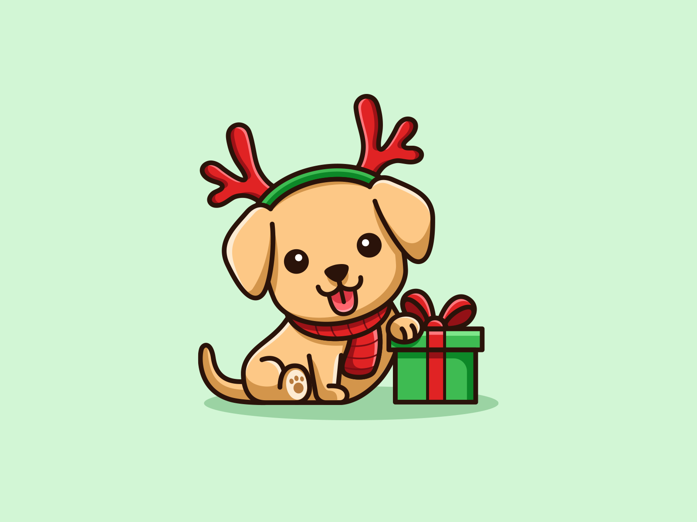

Embarque comigo nesta aventura.
Desenvolvido para transmitir conhecimentos a esta data querida por todos nós.Desenvolvido para transmitir conhecimentos a esta data querida por todos nós.
Desenvolvido para transmitir conhecimentos a esta data querida por todos nós.Desenvolvido para transmitir conhecimentos a esta data querida por todos nós.
Originalmente destinada a celebrar o nascimento anual do Deus Sol no solstício de inverno (natalis invicti Solis), a festividade foi ressignificada pela Igreja Católica no século III para estimular a conversão dos povos pagãos sob o domínio do Império Romano e então passou a comemorar o nascimento de Jesus de Nazaré